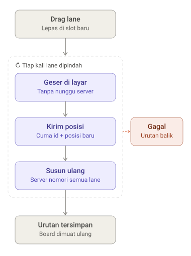
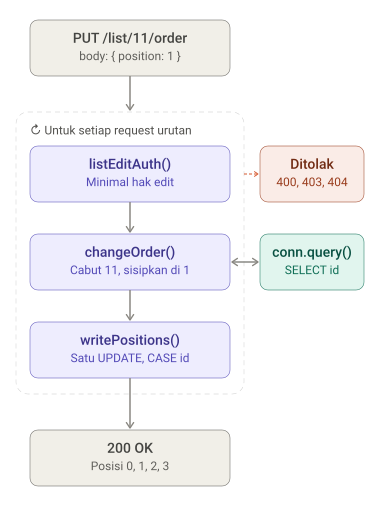

Trello kelihatannya sederhana. Ada kolom, ada kartu, dan semuanya tinggal digeser-geser pakai mouse.
Waktu ikut Studi Independen, program dari pemerintah, kelompokku bikin tiruannya buat project capstone. Ini pertama kalinya aku ngerjain project bareng programmer dengan peran yang beda-beda. Kalau nggak salah ingat, dari awal sampai selesai makan waktu sekitar tiga sampai empat bulan.
Aku daftar di kelas backend development, jadi bagianku bikin REST API-nya pakai Express.js. Kenapa backend? Karena aku nggak jago frontend. Kalau suatu hari nyawaku dipertaruhkan dan satu-satunya cara selamat adalah bikin frontend dengan UI yang bagus, kayaknya aku sudah berserah duluan.
Express juga framework JavaScript pertama yang kupakai. Di kampus aku belajarnya Laravel, yang dari awal sudah bawa routing, migrasi database, login, sampai ORM. Express kebalikannya. Isinya minimalis banget, jadi overhead-nya kecil, tapi hampir semua hal harus dibikin sendiri dari nol. Di repo-nya, pengecekan token JWT, hak akses board, sampai script buat bikin tabel dan ngisi data awal semuanya ditulis sendiri.
Tim frontend nyaranin kami meniru konsep Trello: papan kanban dengan swimlane dan kartu. Satu workspace bisa punya banyak board, tiap board berisi beberapa lane, dan tiap lane berisi kartu-kartu tugas. Di kodenya, lane disebut list.
Kartu itu bagian yang paling banyak makan tabel. Di dalamnya ada deskripsi, label, anggota, tenggat, checklist, cover, link, komentar, dan riwayat aktivitas. Selain deskripsi, masing-masing punya tabel sendiri di database, dan semuanya ikut terhapus begitu kartunya dihapus.
Satu board juga bisa dibuka banyak orang dengan hak akses yang beda-beda. Ada yang cuma bisa lihat, ada yang bisa edit, dan ada admin yang boleh ngatur siapa saja yang punya akses. Hak itu dicek di middleware sebelum request sampai ke controller, jadi orang yang cuma bisa lihat tetap nggak bisa ngubah isi board walaupun nembak API-nya langsung.
Bagian yang paling berat buat kami adalah logika swap lane, yaitu mindahin lane ke posisi lain lewat drag and drop.
Urutan lane disimpan sebagai angka di kolom position. Kalau lane paling kanan dipindah ke
paling kiri, semua lane yang dilewatinya ikut bergeser satu tempat. Menukar angka dua lane cuma benar
kalau keduanya bersebelahan.
Angkanya juga harus tetap rapi. Kalau ada dua lane dengan angka yang sama, urutan yang muncul bisa beda dari yang barusan disusun.
Kami sempat mentok di sini. Akhirnya kami tanya konsep troubleshoot-nya ke beberapa dosen, dan dari situ pelan-pelan ketemu caranya.
Di frontend, lane langsung pindah di layar begitu dilepas, tanpa nunggu balasan server. Yang dikirim ke
backend cuma id lane dan posisi barunya, misalnya PUT /list/11/order dengan body
{ "position": 1 }.

Di backend, logikanya akhirnya cukup pendek. Ambil semua id lane di board sesuai urutan sekarang, cabut lane yang dipindah, lalu sisipkan lagi di posisi barunya. Kalau lane Review di gambar tadi punya id 11, prosesnya kira-kira begini:
[9, 10, 11, 12] // urutan sekarang
[9, 10, 12] // cabut 11
[9, 11, 10, 12] // sisipkan 11 di 1Setelah itu semua lane dinomori ulang dari nol, sekaligus dalam satu query:
UPDATE tbl_lists
SET position = CASE id
WHEN 9 THEN 0
WHEN 11 THEN 1
WHEN 10 THEN 2
WHEN 12 THEN 3
END
WHERE id IN (9, 11, 10, 12)Karena cuma satu UPDATE, semua angka berubah bareng. Nggak ada momen di mana sebagian lane sudah dapat nomor baru sementara sisanya belum.

Kartu yang dipindah antar-lane pakai cara yang sama. Bedanya, kartunya dipindah dulu ke lane tujuan, baru kartu-kartu di lane itu yang dinomori ulang.
Setelah request selesai, frontend memuat ulang isi board dari server. Kalau berhasil, urutannya sama dengan yang sudah tampil. Kalau gagal, muncul pesan error dan lane-nya balik ke urutan lama.
Cara ini tentu ada batasnya. Tiap kali satu lane atau kartu dipindah, posisi semua isi di tempat tujuannya ditulis ulang. Buat lane berisi puluhan kartu ini nggak terasa, tapi kalau isinya ribuan, query-nya ikut panjang.
Belum ada sinkronisasi realtime juga. Kalau dua orang buka board yang sama, perubahan urutan dari satu orang baru kelihatan di layar orang lain setelah halamannya dimuat ulang.
Lane juga cuma bisa dipindah lewat drag and drop. Kartu masih punya jalan lain, yaitu pilih list tujuan di detail kartu, tapi lane belum.
Kode backend-nya ada di urban-sniffle dan frontend-nya di refactored-broccoli. Rancangan database dan dokumentasi API-nya bisa dibuka dari README.
Untungnya waktu capstone frontend dipegang tim frontend, jadi aku nggak perlu berserah.